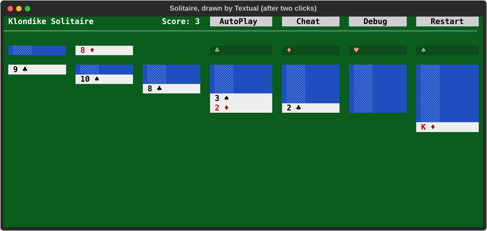
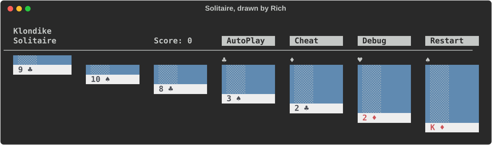

Yes: the same to draw methods can draw Solitaire in a terminal, and take its clicks.
py/terminal target on Textual, as its own epic (the terminal target todo,
T1).
The prototype is P15 · Terminal Drawing Study's: a small Solitaire,
hand-written in the shape the Python writer gives a to draw method.
h()
builds a TREE: tag, props, children.
h("div", {"class": ..., "onClick": ...}, ...).h() builds a tree too, since P12 (J29), but drops the click
handlers: a terminal target would keep them.
textual_board.py
draws the tree with Textual: a live board in the terminal.
onClick, which fires card-click with the card.on card-click plays it, and the board is drawn again.rich_board.py
draws the same tree with Rich: a still picture, printed once.
ink_board.tsx
draws a smaller tree of the same shape with Ink, the CLI's own (Ink 5, React 18).
card-click with that cardstudy: spell_core itself still needs nothing
but Python.
# the live board, in this terminal (click the cards; q quits) uv run --group study python experiments/terminal/textual_board.py # a still picture of the board uv run --group study python experiments/terminal/rich_board.py # its tests: not in spell_core's own run (that one collects tests/ only) uv run --group study pytest experiments/terminal # the Ink sketch, from the repo root (Tab, Enter, q) node_modules/.bin/tsx spell-lang/src/py/core/experiments/terminal/ink_board.tsx
Textual, after two clicks: the 2 of diamonds played onto the 3 of spades, and a card turned from the stock.

Rich, the deal as it starts:

def draw(self) -> Element:
class_name = f"Card face-{self.direction} {self.rank} {self.suit} ui button compact fluid "
if not self.is_face_up:
return h(
"div",
{"class": class_name, "onClick": lambda: trigger("card-click", card=self)},
h("i", {"class": "fitted bicycle icon"}),
)
return h(
"div",
{"class": class_name + self.color, "onClick": lambda: trigger("card-click", card=self)},
f"{self.short_rank} ",
h("span", {"class": "suit"}, self.short_suit),
)
.Card { height: 1; width: 100%; background: #eeeeee; color: black; text-style: bold; padding: 0 1; }
.Card.red { color: #c00000; }
.Card.face-down { background: #1f4fbf; color: #8fb0ff; text-style: none; }
.Card:hover { background: #ffffbb; }
/* the page lays a stacked pile's cards on top of each other (position: absolute): docking does it here */
.Pile.stacked { height: 1; }
.Pile.stacked > * { dock: top; }
class Node:
"""What every drawn element's widget shares: its element's click handler."""
handler: Callable[[], Any] | None = None
def on_click(self, event: events.Click) -> None:
if self.handler is None:
return
event.stop()
# to the app, not run here: drawing again removes this widget, which can't wait for its own removal
self.app.post_message(Clicked(self.handler))
class SpellApp(App):
async def on_clicked(self, message: Clicked) -> None:
"""Call a click's handler, then draw the board again."""
message.handler()
await self.query_one(Board).recompose()
Textual does the most of what a spell app needs; Rich is the drawing underneath it; Ink is JavaScript's.
| Ink | Textual | Rich | |
|---|---|---|---|
| what it is | React for the terminal (JavaScript) | an app framework for the terminal (Python) | styled text, tables and panels (Python) |
| version looked at | 5.2.1, the CLI's; 6 and later need React 19 | 8.2.8 | 15.0.0 |
| building blocks | Box and Text, from a React tree |
widgets: containers, text, buttons, inputs, data tables ... | renderables: text, tables, panels, columns |
| layout | flexbox (Yoga): direction, grow, gap, padding | its own CSS: vertical, horizontal, grid, dock, fr widths |
a table's columns, or things one under another; no layout engine |
| styles | props on each element (color, bold) |
a style sheet, by class: the page's own class names work | a style per piece of text |
| clicks | none: keyboard only (Tab to focus, a key handler) | yes: Click events, hover, and keyboard focus too |
none: it draws, and only reads typed lines |
| in a browser | no | yes: textual-serve runs the same app in a page |
as an exported picture (SVG or HTML) |
| tested headless | ink-testing-library: the last frame, as text |
run_test(): a driver that clicks and types; screenshots |
a recording console: its text, SVG or HTML |
| fit for a spell app | good layout, no mouse; React beside Solid | the best: layout, styles by class, clicks, a browser too | a printout only: good for a board at the end of a run |
A drawn tree is HTML-shaped, with Fomantic's classes on it. Each element became the nearest thing each library has.
| On the page | Textual | Rich | Ink |
|---|---|---|---|
| a div, a table, a cell | a box, its children one under another | a group of renderables; a Table for a table |
a column Box |
tr |
a row of boxes, equal widths | a table row | a row Box, each cell grown equally |
| an element holding only text (a card) | one line of styled text | one styled Text |
one Text |
span inside it |
a styled run in that line | a styled run | nested text |
class |
the widget's classes, plus the tag (el-td) |
looked up in a class-to-style table | looked up in code |
onClick |
a mouse click | nothing | focus with Tab, then Enter |
a stacked pile (cards on top of each other) |
every child docked to the top, so they overlap | only the last child | only the last child |
an icon (<i class="bicycle icon">) |
a pattern of text, ░░░░: the terminal has no pictures |
||
Spell UI's elements (ui-button, ui-checkbox ...) |
not tried; Textual has a widget for most: buttons, checkboxes, inputs, selects, tabs, collapsibles, progress bars, markdown | not tried | not tried; @inkjs/ui has a few |
styles.css.ui button, red) could come with the core.position: absolute have no equal; docking stood in for the stacked piles.class="Card 8 clubs").
_8; the page's CSS can't name .8 plainly either.colspan: "Klondike Solitaire" wraps in its narrow column under Rich.♠️ is two characters, the suit and a "draw me as a picture" mark.
♠.Four ways forward. Each is a later epic, not more of this one: this epic's Python still draws HTML text (Q2).
h() keeps each element's click handler in its tree (since P12 it builds the tree,
and prints it as the same HTML)
textual-serve.spell run prints the app's board as a picture when the program ends, beside or instead of
its HTML.
py-terminal, started from this section and the prototype.
AGENTS.md, "Ink"